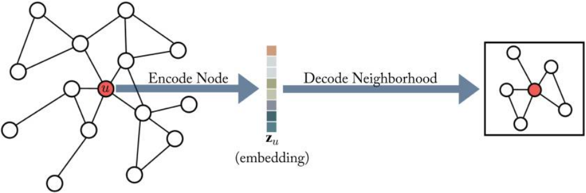

그래프 머신러닝: (3-1) 인코더 디코더 사용
(GRL) Neighborhood Reconstruction Methods: An Encoder-Decoder Perspective
Hamilton,W.L. Graph Representation Learning. 2020
인코더-디코더
Encoder-decoder perspective
인코딩 디코딩(encoding and decoding) 그래프 구조를 기반으로 노드 임베딩에 대해 알아본다. 인코더-디코더 구조는 그래프를 두 개의 핵심 과정으로 이루어진다. 첫째 인코더 모형은 그래프의 각 노드를 저차원 벡터 혹은 임베딩에 매핑한다. 둘째, 디코더 모형은 저차원의 노드 임베딩을 가지고, 원래의 그래프의 각 노드의 이웃에 대한 정보를 재구성(reconstruct)한다.

인코더 (Encoder)
인코더는 노드 \(v \in \mathcal{V}\)를 벡터 임베딩 \(\mathbf{z}_v \in \mathbb{R}^d\)로 매핑하는 함수이다. \[\text{ENC}: \mathcal{V} \rightarrow \mathbb{R}^d\]
대부분 경우 shallow embedding이라고 부르는 방법(단순히 노드 ID에 기반한 임베딩)을 노드 임베딩에 사용한다. 즉, 모든 노드에 대한 임베딩 벡터를 담은 행렬을 가진다:
\[\text{ENC}(v) = Z[v] \quad \text{where} \ Z \in \mathbb{R}^{|\mathcal{V}| \times d}\]
디코더 (Decoder)
디코더는 인코더로 생성한 노드 임베딩의 특정 그래프 통계량을 재구성하는 역할을 한다.
예를 들어 노드 임베딩 \(\mathbf{z}_u\)가 있을 때, 디코더는 \(u\)의 이웃 집합 \(\mathcal{N}(u)\) 혹은 그래프 인접행렬의 열 \(A[u]\)을 예측하고자 한다.
여러 디코더들이 있지만 pairwise decoder를 일반적으로 사용한다. pairwise decode는 노드 쌍 사이의 관계나 유사성을 예측한다:
\[\text{DEC}: \mathbb{R}^d \times \mathbb{R}^d \rightarrow \mathbb{R}^+. \]
임베딩 쌍 \((\mathbf{z}_u,\mathbf{z}_v)\)에 pairwise decoder를 적용하여 노드 \(u\)와 \(v\) 간 관계를 재구성(reconstruction)한다.
\[\text{DEC}(\text{ENC}(u), \text{ENC}(v)) = \text{DEC}(\mathbf{z}_u, \mathbf{z}_v) \sim S[u,v]\]
인코더-디코더 최적화
재구성을 위해 노드 쌍 \(\mathcal{D}\)의 훈련으로 empirical reconstruction loss \(\mathcal{L}\)을 최소화한다.
\[\mathcal{L} = \sum_{(u,v) \in \mathcal{D}}l(\text{DEC}(\mathbf{z}_u,\mathbf{z}_v), S[u,v])\]
- 여기서 \(l: \mathbb{R} \times \mathbb{R} \rightarrow \mathbb{R}\)은 디코딩된 유사성 값 \(\text{DEC}(\mathbf{z}_u,\mathbf{z}_v)\)와 실제 값 \(S[u,v]\)의 불일치를 측정하는 loss function이다.
- \(l\)은 mean-squared error, cross entropy 등이 될 수 있다.
따라서 인코더와 디코더를 훈련시켜 노드 쌍 간의 관계를 효과적으로 훈련 set \(\mathcal{D}\)에 재구성하는 것이 목적이다.
overview
아래 표를 보면 잘 알려진 몇가지 인코더 디코더 임베딩 방법이 있다. (모두 shallow encoding 방법 사용)
인코더 디코더 구조를 사용하면 서로다른 (디코더 함수, 그래프 기반 유사성 측정법, 손실 함수의) 임베딩 기법을 비교하고 간결하게 정의할 수 있다는 장점이 있다.

Factorization-based Approaches
인코더-디코더를 보는 또다른 관점으로 matrix factorization이 있다. 노드 임베딩으로부터 local 이웃 구조를 디코딩하는 것은 그래프 인접행렬의 항목을 재구성하는 것과 관련이 깊다. 즉, matrix factorization을 이용하여 인접행렬 \(S\)을 저차원에서 추정하는 것이다.
Laplacian eigenmaps
가장 초기의 factorization 기반 방법인 LE(Laplacian eignemap) 기법은 스펙트럼 클러스터링 아이디어를 사용한다(관련 내용: 이전 포스트). 이 방법에서는 노드 임베딩 사이 L2-distance 기반으로 디코더를 정의한다:
\[\text{DEC}(\mathbf{z}_u,\mathbf{z}_v) = \parallel \mathbf{z}_u-\mathbf{z}_v \parallel_2^2\]
loss function은 유사성으로 노드 쌍에 가중치를 둔다:
\[\mathcal{L} = \sum_{(u,v)\in \mathcal{D}} \text{DEC}(\mathbf{z}_u,\mathbf{z}_v) \cdot S[u,v]\]
만약 \(S\)가 라플라시안 행렬의 속성을 만족한다면, 손실을 최소화하는 노드 임베딩은 스펙트럼 클러스터링의 솔루션과 일치하게 된다. 임베딩 \(\mathbf{z}_u\)가 d차원이라고 했을 때 최적 솔루션은 d개의 가장 작은 eigenvector (단, 가장작은 것 제외)로 주어진다.
Inner-product methods
내적에 기반한 디코딩 방법이다.
\[\text{DEC}(\mathbf{z}_u, \mathbf{z}_v) = \mathbf{z}_u^{\top} \mathbf{z}_v\]
이 때 두 노드 사이의 유사성이 임베딩의 곱과 비례한다고 가정한다.
내적 방법을 사용하는 알고리즘으로, Graph Fractorization(GF), GraRep, HOPE 등이 있다. 세 방법 모두 내적 디코더와 다음의 평균제곱오차를 합하여 사용한다:
\[\mathcal{L} = \sum_{(u,v)\in \mathcal{D}} {\parallel \text{DEC}(\mathbf{z}_u,\mathbf{z}_v) - S[u,v] \parallel}^2_2\]
하지만 \(S[u,v]\)를 어떻게 정의하냐에 따라 다르다. GF는 인접행렬을 그대로 사용(\(S=A\))하고, GraRep은 인접행렬의 power로, HOPE는 이웃 중복 척도(neighborhood overlap)를 사용한다.
이러한 방법을 matrix-factorization 방법이라고 한다. 손실 함수를 SVD같은 factorization 알고리즘으로 최소화한다.
노드 임베딩 \(\mathbf{z}_u \in \mathbb{R}^d\)을 행렬 \(Z \in \mathbb{R}^{|\mathcal{V}| \times d}\)에 쌓으면, 재구성 타켓은 \(\mathcal{L} \sim {\parallel ZZ^\top - S \parallel}^2_2\)로 쓸 수 있으며, 노드-노드 유사성 행렬 \(S\)의 저차원 factorization에 대응한다.
즉, 이 방법의 목표는 각 노드에 대한 임베딩을 학습하여 학습된 임베딩 벡터 사이의 내적이 노드 유사성에 근사하도록 하는 것이다.
참고자료
[1] Hamilton, W. L. (2020). Graph Representation Learning. Morgan & Claypool Publishers.